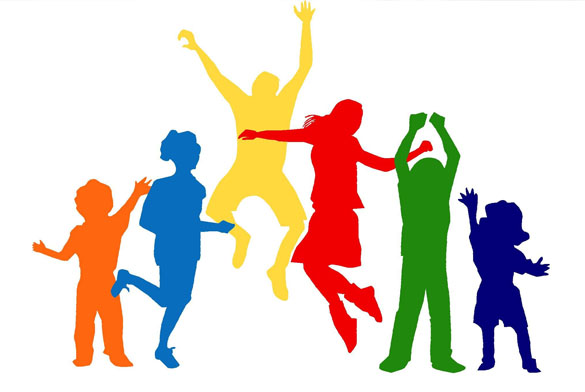

Les Private HOME SCHOOLING Primagama

Homeschooling (Sekolahrumah) adalah sebuah sistem pendidikan alternatif yang saat ini menjadi salah satu pilihan orang tua dan masyarakat pada umumnya untuk memberikan pendidikan pada anak-anaknya. Dimana keberadaannya sah, diakui, sama dan sederajat dengan Sekolah Formal sesuai dengan yang tertuang dalam Undang Undang Sisdiknas No 20 Tahun 2003 dan Permendikbud No 129 Tahun 2014.
Homeschooling atau Sekolahrumah yang telah diatur dalam Peraturan Menteri Pendidikan dan Kebudayaan Tentang Penyelenggaraan Sekolahrumah adalah Proses layanan pendidikan yang secara sadar dan terencana dilakukan oleh orangtua/keluarga di rumah atau tempat-tempat lain dalam bentuk tunggal, majemuk, dan komunitas dimana proses pembelajaran dapat berlangsung dalam suasana yang kondusif dengan tujuan agar setiap potensi peserta didik yang unik dapat berkembang secara maksimal.
Homeschooling Primagama dalam pembelajarannya menerapkan metode “school at home” yaitu suatu metode pembelajaran dimana kurikulum yang digunakan sama dengan disekolah formal pada umumnya namun proses pembelajaran dilakukan di rumah, baik secara individu maupun secara komunitas dalam suasana yang ramah dan kekeluargaan, namun tetap memiliki standart ketercapain materi dan kualiatas sama dengan kurikulum yang diterapkan disekolah formal. Dalam melakukan pendampingan proses pembelajaran, homeschooling primagama menggunakan dua pendekatan yaitu pendekatan Aspek Psikologis dan pendekatan Potensi Akademik.
Pendekatan Psikologis, dimana perserta didik akan dianalisis terlebih dahulu, latar belakang masalahnya, aspek minat, bakat dan kemampuanya melalui berbagai test, kemudian diberdayakan sesui dengan potensi, minat, bakat dan kemampuan serta attitude perserta didik masing-masing, melalui kegiatan ektrakurikuler.
Pendekatan Akademik, dimana sistem pembelajaran yang diberikan dengan mengedepankan Modalitas belajar peserta didik yaitu dengan menyesuaikan Sensetive learning (tingkat kemampuan), Style learning (gaya belajar), Characters Commucation (karakter komunikasi) peserta didik.
Metodologi pembelajaran yang dikembangkan oleh tenaga pendidik di homeschooling primagama adalah “Learning How To Learn” (Belajar bagaimana cara belajar) yaitu mengedepankan teknik teknik memahami konsep, memahami rumus, teknik belajar yang benar, mempersiapkan evaluasi dan lain-lain.
Diharapkan dengan konsep dan metode yang dikembangkan dihomeschooling primagama output peserta didik dihomeschooling primagama memiliki, bekal antara lain ilmu pengtahuan yang baik (knowledge),ketrampilan kecakapan hidup (Life Skill) dan sikap hidup yang baik (Attitude).